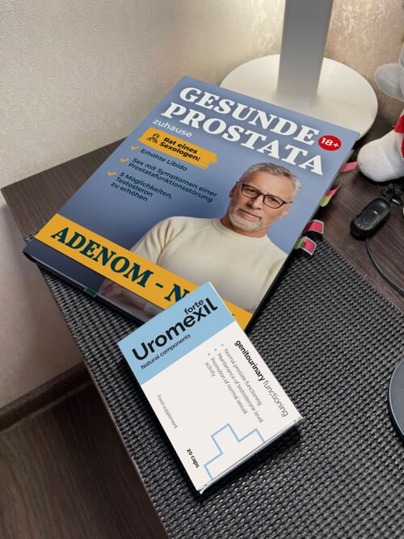

In Israel werden Männer in 2-3 Wochen einmal im Leben und für
immer von Prostatitis geheilt
(die Methode wird unten beschrieben).
Gleichzeitig verstecken in Deutschland gierige Ärzte in Absprache mit Apotheken jedes Jahr wirksame Mittel, kriegen von Männern Geld und verschreiben teure Medikamente und Verfahren! (Um herauszufinden, wie und wo Sie ein israelisches Mittel finden können, lesen Sie den folgenden Artikel sorgfältig durch)
Prostatitis ist eine der häufigsten Krankheiten bei Männern über 40 Jahren, und gleichzeitig bemerken Ärzte eine unangenehme Tendenz zur "Verjüngung" der Krankheit. Immer häufiger wenden sich Männer mit diesen Problemen an Ärzte im Alter von 30, 25 und sogar 20 Jahren.
Die Krankheit provoziert die folgenden Gewohnheiten und Verhaltensweisen
- - sitzende Lebensweise,
- - unregelmäßiges Sexualleben,
- - übertragbare Infektionskrankheiten,
- - erbliche Veranlagung,
- - Stress und Erkrankungen des Urogenitalsystems.
In der modernen Welt ist es sehr einfach, Probleme mit der Prostata zu bekommen. Jemand wird schon mit 25, jemand mit 45 krank, es ist einfach die Frage der Zeit.
Überprüfen Sie, ob Sie Symptome von Prostatitis haben:
Im Jahr veröffentlichte das Zentrum für urologische Erkrankungen eine erschreckende Statistik: Mehr als 55% der Männer über 40 Jahren leiden an Prostataproblemen. Um Prostatitis zu bestimmen, braucht man auch keine medizinische Ausbildung, die meisten Symptome sind spezifisch:
-
Schneidender Schmerz:
- - im Unterbauch und Hodensack;
- - im Damm oder Penis;
-
Störungen beim Wasserlassen:
- - häufiges Wasserlassen, Brennen in der Harnröhre;
- - Gefühl der "nicht vollständig entleerten Blase";
- - Schwierigkeiten beim Wasserlassen (schwacher Strahl);
-
Störung der Sexualfunktion:
- - Verringerung des sexuellen Verlangens;
- - Verschlechterung der Dauer und Qualität der Erektion;
-
Ejakulationstörung:
- . vorzeitige Ejakulation oder Probleme mit ihrer Leistung;
- - schwache Ejakulation.
- Sowie erhöhte Müdigkeit und Reizbarkeit.
Trotz der offensichtlichen Rückgang der Lebensqualität leben viele Männer jahrelang mit der Prostatitis und vermuten gar nicht, zu welchen Folgen diese Krankheit führen kann.
Nicht bis zum Ende heilende Prostatitis kann zu Prostataadenom
führen.
Teilweise können diese Männer verstanden werden, die Diagnose "Prostatitis" bei jedem Mann, der diesen Prozess versteht, verursacht schwere Depressionen und Verlegenheit. Darüber hinaus wird der Gang zum Urologen in den allermeisten Fällen nach der Diagnose "Prostatitis" zu einer jährlichen schmerzhaften Pflicht. Ärzte lindern die akutesten Symptome mit Medikamenten, die "von Apothekern empfohlen" werden. Sobald Sie jedoch ihre geringste Verschreibung brechen, kehrt die Prostatitis zurück.
Wie Prostatitis bei uns behandelt wird (und wie es nicht behandelt WERDEN MUSS)
Das Traurigste ist, dass es unmöglich ist, Prostatitis loszuwerden, auch wenn Sie es wirklich wollen.
Standardbehandlung bei Prostatitis:
- Sie gehen ins Krankenhaus oder zum Arzt: Das spielt keine Rolle, denn am Ende müssen Sie trotzdem bezahlen.
- Der Arzt führt eine Untersuchung durch, verschreibt viele Analysen. Einige von ihnen werden nicht benötigt, sondern nur durchgeführt, um etwas anderes zu finden, das behandelt werden kann. Außerdem kosten die Analysen selbst auch Geld.
- Nach der Untersuchung stellt der Arzt die Diagnose "Prostatitis" und verschreibt "empfohlene Medikamente". Es werden solche Medikamente verschrieben, die zur Linderung von akuten Symptomen führen, aber nicht zur Heilung der Prostatitis. Und natürlich empfiehlt der Urologe Medikamente von Unternehmen, deren medizinische Vertreter ihm das meiste Geld einbrachten. Diese Medikamente sind auch sehr bekannt.
- Zusätzlich zu den "empfohlenen" Medikamenten zur Linderung der Symptome verschreiben Ärzte immer eine rektale Prostatamassage oder eine Behandlung mit einer ähnlichen Methode. Es ist eine sehr unangenehme Prozedur – die Massage wird mit einem Finger durch den Anus des Mannes gemacht. Die Massage soll durchschnittlich 10-14 Mals wiederholt werden. Für jede Massage müssen Sie natürlich bezahlen.
-
- Neben der primären Behandlung verschreiben die Ärzte oft die Medikamente für die Verbesserung der sexuellen Funktionen und die Qualität des Spermas, die Wiederherstellung des Organismus nach Antibiotika usw.
Als Ergebnis kostet die einmalige Behandlung von Prostatitis in Deutschland 100-200 Euro, Urologen bilden tatsächlich den Behandlungsverlauf abhängig von den finanziellen Möglichkeiten des Patienten. In diesem Fall werden nur die wichtigsten akuten Symptome der Krankheit beseitigt. Chronische Prostatitis bleibt und wird wieder auftreten, sobald Sie aufhören, der von Ihrem Arzt verschriebenen Diät zu folgen. Infolgedessen müssen Sie diese Beträge jährlich zahlen; Genau darauf beruht die Tätigkeit der Pharmaunternehmen.
Wie wird Prostatitis in Israel behandelt
In Israel ist es nicht einmal notwendig, einen Arzt zu besuchen, um Prostatitis zu behandeln. Es reicht aus, bei den ersten Symptomen in die Apotheke zu gehen und ein seit Jahrzehnten bewährtes Mittel zu kaufen, das nicht auf dem deutschen Markt erscheint, nur weil es hilft, chronische Prostatitis vollständig loszuwerden (einmal im Leben und für immer)! Natürlich ist ein solches Mittel der deutschen Pharmamafia nicht vorteilhaft. Am Ende ist es viel vorteilhafter, dass Menschen jedes Jahr schmerzhafte Symptome beseitigen müssen, als die Krankheit mit einem sparsamen Mittel zu heilen, das absolut jedem zur Verfügung steht. Im Gegensatz zu unserem Land ist die private Krankenversicherung in Israel hoch entwickelt. Krankenkassen sind nicht daran interessiert, dass Patienten Ärzte mehr als 2 Mal pro Jahr besuchen, schließlich müssen die Unternehmen dafür bezahlen, und die Gehälter der Ärzte dort sind ziemlich hoch. Im Gegenteil, sie sind daran interessiert, eine möglichst wirksame und schnelle Behandlung zu gewährleisten.
In Israel haben die Interessen der Versicherungsunternehmen die Mafia der Pharmakonzerne besiegt und zum Glück für normale Männer wird hier immer ein Arbeitsmittel zur Behandlung von Prostatitis verkauft...
Wird sich die Situation in Deutschland zum Besseren verändern?
Leider ist es nicht notwendig, positive Veränderungen in diesem Bereich zu erwarten, weil das milliardenschwere Geschäft der europäischen Pharmafirmen es nicht erlauben wird.
Heute ist es jedoch nicht notwendig, Mittel in der Apotheke zu kaufen. Dies kann im Internet auf spezialisierten Websites erfolgen. Vor kurzem wurde als das wirksamste Mittel in Israel anerkannt. Dieses Produkt kann auch in unserem Land gekauft werden. Fast unmittelbar nach dem Erscheinen auf dem Markt wurde es sehr beliebt.
Vergleichen wir, wie sich von dem beliebtesten Medikament unterscheidet, das in Apotheken verkauft wird.

|
Andere medizin |
|
|---|---|---|
| Preis: | SIE KÖNNEN MIT 50% RABATT ERHALTEN! | Fast 52 Euro für 90 Kapseln. Empfohlene Kur: 3 Packungen = 156 Euro |
| Wirkung: | Lindert vollständig Prostatitis, auch in chronischer Form. Einmal und für immer. Für nur eine Behandlungskur. | Lindert akute Symptome von Prostatitis - Schmerzen und Harnstörungen. |
| Weitere Wirkungen: | Erhöht Libido Warnt vor früherer Ejakulation Verbessert die Potenz Normalisiert die Funktion der Blase Verbessert den Zustand der Gefäße |
Erweicht Fäkalien, stärkt die Darmperistaltik |
| Nebenwirkungen, Gesundheitsschäden | Fehlen Die Zutaten sind völlig natürlich. | Bei häufiger Einnahme kann zu bösartigen Veränderungen
in der Prostata führen Verringert die Potenz Verursacht Probleme mit dem Darm Unterdrückt das Immunsystem, fördert die Entwicklung von Allergien Verursacht starke Schmerzen im Magen |
| Wirkungsprinzip: | Wirkt auf die Prostata komplex dank einer speziell ausgewählten Zusammensetzung aus natürlichen Komponenten, hat eine entzündungshemmende und stärkende Wirkung. Heilt die ganze pathogene Flora, verbessert die Struktur und die Funktion der Prostata. Ist bei der chronischen, stagnierenden und bakteriellen Prostatitis empfohlen. | Vorübergehend lindert Schmerzen in der Prostata und maskiert den Verlauf der Krankheit. Nach dem Ende der Wirkung vom Mittel wird sich die Krankheit nur verschlimmern. |
| Komponenten: | Natürliche pflanzliche Inhaltsstoffe | Der einzige natürliche Bestandteil sind die zerkleinerten Früchte der Zwergpalme (kein einziger Extrakt!). Alles andere ist eine pure Chemie - Titandioxid; Eisenoxid; Cochenyl (E 124) und andere. |
| Garantie: | 365 Tage Herstellergarantie | Keine Garantie |
In unserem Land ist es dem Hersteller dennoch gelungen, dieses Mittel für alle zugänglich zu machen! Nach langen Verhandlungen "mit den richtigen Leuten" ist es uns gelungen, das Bundesprogramm "Männergesundheit" zu starten. Das Ziel des Programms ist: Jedem Mann die Möglichkeit zu geben, Prostatitis zu heilen, ohne es in das Stadium des Krebses zu bringen, unabhängig von seiner finanziellen Situation. Im Rahmen dieses Bundesprogramms erhalten Sie mit 50% Rabatt!
Sie können auf der Website des Herstellers kaufen, indem Sie unten auf die entsprechende Schaltfläche klicken.
Die wichtigsten Apothekenketten des Landes haben bereits eine groß angelegte Kampagne gegen dieses Mittel gestartet. Es ist möglich, dass sehr bald seine Verkäufe gestoppt werden. Wir empfehlen allen Männern, so früh wie möglich zu kaufen. Bis (einschließlich) wird das Mittel mit einem Rabatt von 50% verkauft! Sie können auch das Gesundheitstagebuch "Gesunde Prostata" als Geschenk erhalten. In diesem Tagebuch finden Sie nützliche Tipps zur Verbesserung Ihrer Gesundheit zu Hause
Kommentare
Stefan
Ich bestätige voll und ganz!!! ist ein Wundermittel. Ich habe es in Montenegro gekauft, wo ich letzten Sommer einen Urlaub machte. Es kostete fast 70 Euro. Davor habe ich seit 10 Jahren an chronischer Prostatitis gelitten. Ich habe versucht, es mit klassischen Medikamenten zu heilen, obwohl sie nur eine vorübergehende Wirkung hatten. Bei der Einnahme von sind die Symptome der Prostatitis vollständig verschwunden. Ich empfehle Urotrin allen Männern. Es hilft!
Thomas
Bestellt! Ich habe dieses Mittel wirklich mit einem Rabatt von 50% bekommen! Angenehm überrascht. Danke!
Markus
Ich hatte auch Erfahrung mit der Behandlung von Prostatitis mit diesem Mittel. Ich kaufte es auf dieser Website, aber nur dann gab es keine Rabatte und es kostete etwa 100 Euro pro Packung. Aber es ist wirklich das Geld wert, es hat mir geholfen, Prostatitis für ungefähr 2 Wochen ohne jede Massage loszuwerden.
Georg
Ich habe eine Sendung im Fernsehen gesehen, in der über dieses Mittel berichtet wurde. In deutschen Apotheken wird es nicht verkauft. Es war so etwas wie eine journalistische Untersuchung. Ich möchte mehr über dieses Mittel wissen.
Teodor
Chronische Prostatitis habe ich seit 28 Jahren. Jetzt bin ich 41. Während dieser Zeit unterzog ich mich zweimal einer Behandlung, erzielte jedoch keine großartigen Ergebnisse. Letztes Mal haben die Ärzte mich kaum gerettet. Sie sagten, dass Prostatitis in Prostatakrebs umgewandelt werden kann. Also ich rate allen, die an Prostatitis leiden, sie so früh wie möglich loszuwerden. Sie ist sehr gesundheitsgefährdend.
Simone
Ich werde unbedingt für meinen Mann bestellen. Danke!
Florian
Ich habe das Mittel mit einem Rabatt von 50% erhalten. Vielen Dank an die Hersteller!
Christian
ist das beste Mittel! Ich bin mit
dem Autor dieses
Artikels
und
allen Kommentaren einverstanden. Ich habe es vor ungefähr 3 Monaten
eingenommen. Von Prostatitis gibt es keine Spur! Ich habe viele Jahre gelitten, aber
jetzt fühle ich mich großartig.
Konrad
+500. Ausgezeichnetes Mittel!
Paul
Ich habe mehr Details auf der offiziellen Website von gefunden. Sehr beeindruckend! Es wurde versprochen, dass in 5 Tagen es mir per Post geliefert wird.
Wolfgang
Und wirklich ein gutes Mittel. Zuerst war ich skeptisch. Ein paar Tage und das Mittel war schon bei mir. Jetzt, nach einem Monat der Einnahme, gibt es kein einziges Symptom der Prostatitis. Keine Schmerzen, kein Brennen, keine Probleme beim Wasserlassen. Ich bin allgemein zufrieden. Ich empfehle.
Lukas
Danke für den interessanten Artikel! In Deutschland sind wir alle auf höchstem Niveau korrupt, es ist auch gut, dass man aus dem Internet etwas lernen kann, was uns die Ärzte nicht sagen. Ich habe mit einem Rabatt bestellt. Endlich wird die Prostatitis vorbei sein.
